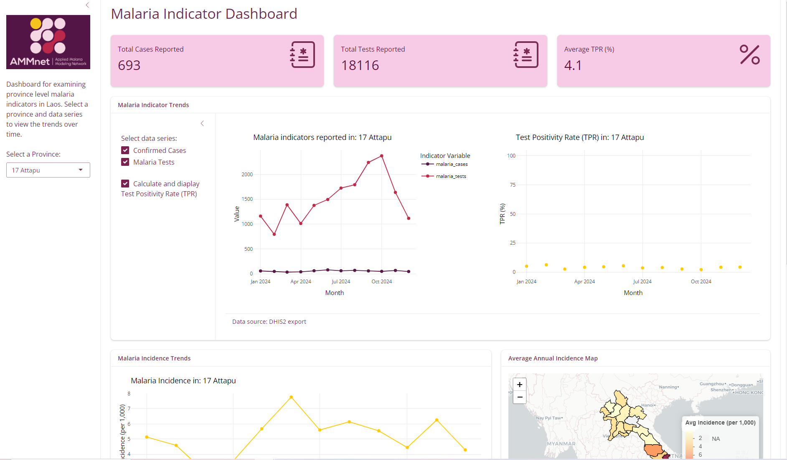

Introduction to R Shiny Dashboarding
June 25–27, AMMnet Senegal Workshop
üéØ Session Objectives
Understand key elements of Shiny Dashbaords
Gain hands on experience customising Shiny dashbaords
We can’t cover all aspects of creating Shiny Dashboards but there are a tonne of great resources online we will share during the course of today!
What is a Dashboard?
- A dashboard is a visual interface for exploring and interacting with data.
- In public health, dashboards help turn raw data into insights.
- Shiny lets you build dashboards directly in R — no web development needed!
üìä You‚Äôve probably seen dashboards used in the COVID-19 response - what other dashboards can you think of?
Why Use Shiny?
✅ Turns R code into interactive web apps
✅ You don’t need to learn HTML, CSS, or JavaScript
✅ Great for sharing visualizations, tables, and summaries
✅ Easy to deploy: share with collaborators or host online
✅ Allow non R users to interact and explore data without the need to code.
✅ Provide analytical capacity to people without analytical skills
✅ Shiny is a lot more flexible that DHIS2 modules
Challenges
üõë Need an R coding background
üõë Can be more complext than normal R scripts
üõë Can be costs to hosting apps for distribution
Examples of Dashboards
Shiny dashbaords can grow to be incredibly complex web applications but can also be small simple tools designed to help colleagues with everyday tasks and problems. Here are two examples of dashboards we’ve created recently at PATH.
ü¶µüí™ Anatomy of a Shiny App
A basic Shiny app has two main parts:
- UI (User Interface) – what the user sees and interacts with (frontend)
- Server – what R does behind the scenes - computations and tasks based on the user inputs (backend)
library(shiny)
library(bslib)
# Define UI ----
ui <- fluid_page(
# Define the layout
# Define the theme
# Define user input selection
# Define types of outputs
)
# Define server logic ----
server <- function(input, output) {
# Computations
}
# Run the app ----
shinyApp(ui = ui, server = server)This code is the bare minimum needed to create a Shiny app. The result is an empty app with a blank user interface.
üé® Theming
Customizing the theme of your dashboard is a really simple way to upgrade the look and feel of your app.
You can use the {bslib} package to easily:
Change colors, fonts, and spacing
Apply modern Bootstrap themes (like
flatly,minty,cosmo)Preview changes live while building your app
We’ll explore this in more detail later — for now, just know it’s easy to give your dashboard a polished, professional look!
üì¶ Helpful Packages
shiny– the core packagebslib– for modern dashbaord designtidyverse– for data wranglingDT– for interactive tablesplotly– for interactive plotsleaflet- for open source interactive maps
üåê Helpful Webpages for Getting Started with Shiny
Below are some beginner-friendly resources to help you dive deeper into Shiny:
| Link | Description |
|---|---|
| Shiny Get Started | Official step-by-step tutorial for beginners, with hands-on examples. |
| Shiny Gallery | Explore live examples of Shiny apps with source code. |
| Mastering Shiny (book) | Free online book by Hadley Wickham covering basics to advanced topics. |
| Shiny Cheatsheet | Handy reference for Shiny functions and UI elements (download the PDF). |
| Shiny UI Editor (Experimental) | Drag-and-drop interface to design your UI visually. |
These links are a great place to start exploring after today’s session.
What You’ll Build Today: An R Shiny dashboard to visualize routine malaria data
Pull data from DHIS2 ✔
Clean and summarize key indicators ✔
Build simple interactive plots and tables üîÉ
Customize üîÉ
Key Takeaways
Shiny makes dashboards easy to build in R
You’ll learn by doing — today is all about hands-on practice
You’ll work with a template and build out each element of the dasboard
We‚Äôll go step-by-step üõ†Ô∏è
Instructions
Follow the link to the materials worksheet - open in google chrome for auto translate.
Work through each section and complete the exercises as you go.
Reach out for help or to ask questions!
Enjoy!!
Example Finished Dashboard

PATH | AMMnet Senegal Meeting 2025